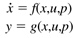
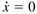
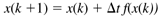
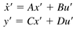
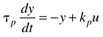

2.8 Summary
We have focused primarily on the development of ordinary differential equation models that describe the dynamic behavior of processes where perfect mixing can be assumed. The models have the form

where the states, inputs, outputs, and parameters are x, u, y, and p, respectively.
States appear in the "accumulation" (derivative with respect to time) term, inputs can be either manipulated or disturbance variables, outputs are often a subset of the states, and parameters are often physical intensive variables, such as density or kinetic rate parameters. The modeling equations are based on material (component or total) and energy balances. States are often concentrations (from the component balances), volume (total material balance on liquids), pressure (total material balances on gases), or temperature (energy balances).
The steady-state solution is , or f(x,u,p) = 0 which can be found numerically, using MATLAB functions such as fzero and fsolve (which require the optimization toolbox) as shown in the MATLAB tutorial module.
To integrate the differential equations numerically, we use a variant of Euler integration, which is

The ODE module provides a tutorial on the use of MATLAB to integrate ordinary differential equations.
An understanding of dynamic behavior is obtained by using linear state-space models, which have the form

where the prime notation (') is used to indicate a deviation variable. In the next chapter we further analyze linear state space models to obtain an understanding of dynamic behavior. These state space models are converted to Laplace transfer function models, which are used later for control system design.
For the processes studied, some important characteristics were discussed. For example, residence time (volume/flow rate) is often a good indicator of the relative "speed" of the process dynamics, particularly for nonreacting systems. For chemical reactors, the Damkohler number is an important parameter, since it is the ratio of a characteristic reaction time to residence time.
The concept of process gain is extremely important for process control design. Process gain is the sensitivity of the process output to a manipulated input. That is, process gain is the ratio of the long-term (steady-state) change in process output to the change in process input.
Many process systems can be represented as single-state models, where the output is the state. The resulting first-order model has the form

where kp is the process gain and tp is the process time constant. The dynamic behavior of first-order processes will be discussed in the next chapter.
The examples used in this chapter were
2.1 Gas Surge Drum 2.2 An Isothermal Chemical Reactor 2.3 Heated Mixing Tank 2.4 A Second-Order Reaction 2.5 Jacketed Heater
|